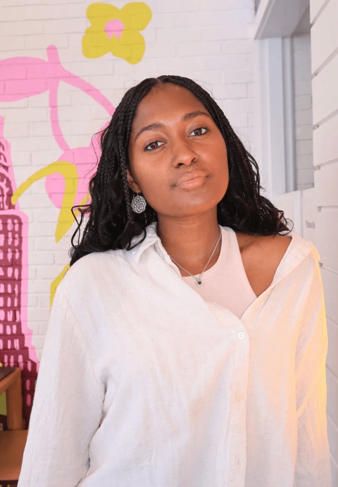

Princeton University · Class of 2027
Psychology major. Pre-law. Fluent French speaker. I work at the intersection of behavioral science, creative storytelling, and strategic communication — finding the story in the data, and the argument in the story.

A research film on Black hair as identity and resistance. Exhibited at the 2025 Venice and Mallorca Art Biennales.
Learn more →Junior Paper exploring how identity-behavior conflict leads to disengagement, drawing on Festinger, Oyserman, and Covington.
Read abstract →Replication of Hopkins et al. (2016) using R and mixed-effects modeling. Examined how neuroscientific language shapes perceived explanation.
View on OSF →Immigration case support — affidavit drafting, multilingual documentation, and statutory research across 9+ active client cases.
Learn more →Campus AI Lead at a Series A company with 3M+ waitlisted users. Organizing AI hackathons and shaping product through student feedback.
Learn more →Led marketing for 3 consecutive conferences drawing 150+ attendees across Ivy+, government, and corporate sectors.
Learn more →Live reporting and digital storytelling for Princeton Varsity Athletics — content strategy, social presence, student-athlete voices.
See work →Building predictive behavioral models in R to identify drivers of consumer decision-making, with ggplot2 dashboards for research teams.
Learn more →